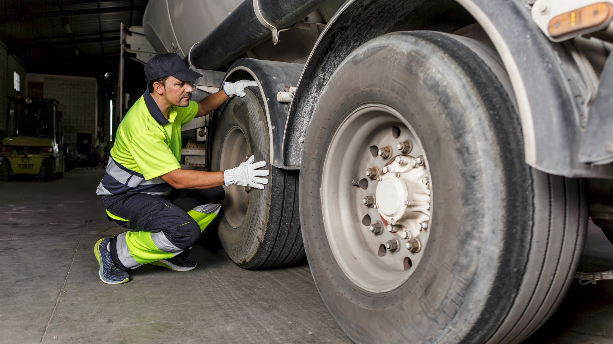

Every truck tire that leaves a retread line gets mounted and inflated before it goes back into service. A fleet that runs its own line also takes on that step, and its main hazard: a sidewall that has been run underinflated can fail as the tire is brought up to pressure. That failure, a zipper rupture, releases air and steel cords with explosive force. Rules in both the U.S. and Ontario require a restraining device, such as an inflation cage, when inflating these tires, and industry bulletins describe how to inspect and inflate them in stages.
This guide covers what the rules say, what the tire industry recommends, and how it fits into an in-house retread shop's process. Sourcing note: we read the regulations, ministry guidance and trade coverage through search extracts, and we name each source at the end. This is a general overview, not legal or engineering advice. Your shop's procedures should follow the current text of the regulation and the current industry bulletins.
What a zipper rupture is
- The failure. Trade and industry sources describe a zipper as a circumferential break in the mid to upper sidewall, exposing an even line of broken steel cords.
- The main cause. Severe underinflation, often combined with overloading, flexes and fatigues the sidewall cords. The tire may look fine on the outside.
- When it happens. A weakened tire can fail while it is being reinflated. That is why the inflation step in a tire shop, including a retread shop, is where the risk is highest.
- The 80% threshold. WorkSafeNB, New Brunswick's workplace safety agency, advises never reinflating a tire that has been run flat or underinflated at 80% or less of its recommended pressure. FleetOwner coverage likewise notes that zipper risk rises when pressure is below 80% of the recommended inflation.
What OSHA 1910.177 requires (U.S.)
For U.S. readers and as a widely used benchmark, OSHA's standard 29 CFR 1910.177 covers servicing single-piece and multi-piece rim wheels on large vehicles: trucks, tractors, trailers, buses and off-road machines. Rim wheels on automobiles, and on pickups and vans using automobile or "LT" truck tires, are outside its scope. Its main inflation requirements include:
- A restraining device or barrier for inflating tires on single-piece wheels, unless the rim wheel will be bolted onto a vehicle during inflation. Multi-piece wheels also require a restraining device.
- Strength. Each restraining device or barrier must withstand the force of a rim wheel separation at 150% of the maximum tire specification pressure, and must keep rim wheel components from being thrown outside or beyond it.
- Limited inflation outside the device. Outside a restraining device, a tire may be inflated only enough to seat the bead on the rim ledge and create an airtight seal.
- Inspection inside the device. After inflation, the tire and wheel must be inspected while still in the restraining device to confirm they are properly seated and locked.
- Training and procedures. Employers must train employees who service rim wheels and must have safe operating procedures in place.
What applies in Ontario
- Regulation 851, section 77. Ontario's Industrial Establishments regulation under the Occupational Health and Safety Act addresses tire inflation in section 77, and the Ontario government's own guidance points to that section. A compliance summary from OHS Insider describes it as requiring safety cages or other protection against blown-off side or lock rings when a tire mounted on a rim is inflated.
- Ministry guidance. Ontario's guidance on working with wheel rims and tire assemblies tells workers to use protection against flying lock rings, rims, flanges or tire parts, and advises deflating a tire by removing the valve core before making adjustments.
- Bead seating. The Ministry's alert on tire machines warns against exceeding 275 kPa (40 psi) when seating beads.
- Check the current text. We read section 77 through secondary summaries, not the regulation itself. Confirm the exact wording on Ontario's e-Laws site, and see our Ontario workplace safety guide for the wider set of rules a retread shop works under.
The industry procedure: inspect, then inflate in stages
The U.S. Tire Manufacturers Association (USTMA) publishes a service bulletin on zipper ruptures, and the Tire Industry Association (TIA) teaches a matching procedure. As summarized in trade coverage:
- Deflate and demount first. A tire that comes off a vehicle at or below the 80% threshold may have been run underinflated or serviced improperly, a commercial tire service executive warns in Transport Topics coverage. Industry guidance, including OHS Insider's tire-servicing guide, advises fully deflating such a tire, by removing the valve core, before it comes off the vehicle.
- Look, feel and listen with the tire deflated. Trade coverage quotes TIA's training lead, Kevin Rohlwing, as saying careful inspection of the deflated tire can reduce zipper risk. Warning signs include creases in the inner liner, undulations or bumps in the sidewalls, and a crunching sound when the sidewall is pressed. The USTMA-based guidance calls for a full visual and hands-on inspection in a well-lit area with a hand-held grazing light, which casts shadows over sidewall irregularities.
- Seat the beads at low pressure, then move into the cage. The bulletin, as summarized by Autosphere, describes seating the beads at low pressure and continuing inflation in a restraining device in stages, checking the sidewalls for distortions, undulations or popping sounds at each stage. The stage pressures differ by tire type (light and medium truck tires versus bus and refuse tires), so take the exact figures from the current bulletin.
- Scrap suspect tires. A tire showing possible zipper characteristics at any stage should be marked, made unserviceable and scrapped, not repaired or retreaded.
- Stay out of the trajectory. Use a clip-on air chuck with enough hose to stand clear, and keep out of the path of the sidewall during inflation. Trade coverage notes that damage on the side away from the technician can go unnoticed until the assembly is out of the cage, which is why the inspection steps matter.
Where this fits in an in-house retread line
This section is our reasoning, built on the facts above. It is not a published finding.
- The first defence is at casing inspection. Signs of run-flat or underinflation damage are exactly what casing inspection is meant to catch before a casing is buffed or built. A casing with zipper characteristics should never reach the curing chamber. Our 5-point casing check and NDT inspection guide cover that step, and an inspection spreader opens the casing so the inner liner can be seen and felt.
- Know what came off the truck underinflated. Pressure records at removal tell the shop which casings need the closest look. See underinflation and casing life and casing tracking.
- Plan the cage into the layout. The inflation station needs a restraining device sized for the largest tires the line handles, a clip-on chuck with an in-line valve and gauge, and enough clear space around it. Budget it with the rest of the line; our setup cost guide covers the main equipment.
- Write it down and train to it. A written inflation procedure, training records and a scrap rule for suspect tires turn the bulletin into daily practice. The same records support the shop's quality system.
Where Good Hope fits
Good Hope is a manufacturer-direct supplier of retreading machinery, consumables, components and repair tools, with local service in Ontario and transparent all-in Canadian pricing. We are not a franchisor, and we don't run retread shops for customers. We equip fleets to run their own lines, from casing inspection through curing, and keep them supplied as they grow. When we help plan a new line, the inspection and inflation stations are part of the layout discussion.
Sources
- 29 CFR 1910.177, "Servicing multi-piece and single piece rim wheels" (OSHA, Cornell LII): scope (large vehicles; exclusion for automobiles and pickups/vans with automobile or LT tires); restraining device or barrier for single-piece wheels unless bolted to the vehicle; 150% strength requirement; containment; inflation outside the device only to seat the bead; inspection inside the device; training and procedures (via search extracts, including OSHA and J.J. Keller summaries).
- Ontario, Regulation 851 (Industrial Establishments), section 77, as described in Ontario government guidance and OHS Insider, "Safety Requirements for Servicing of Tires, Wheels & Rims Around Canada" (via search extracts).
- Ontario Ministry of Labour, "Working with wheel rims and tire assemblies" and "Alert: Tire machines": protection against flying rim parts; deflate by removing the valve core; do not exceed 275 kPa (40 psi) when seating beads (via search extracts).
- WorkSafeNB, hazard alert "Tire Explosion Causes Life Threatening Injuries": do not reinflate a tire run flat or at 80% or less of recommended pressure; inflate in a cage or similar device (via search extract).
- USTMA Tire Industry Service Bulletin on zipper ruptures (TISB 33 no. 6), as summarized by Autosphere, "Commercial Tires: Zipper Ruptures" (January 2025): inspection with grazing light; staged inflation in a restraining device; stage pressures by tire type; mark and scrap suspect tires (via search extracts).
- Transport Topics, "Staying Safe While Inflating Truck Tires": restraining cage, long hose with clip-on chuck; tires below 80% may have been run underinflated or serviced improperly (via search extracts). OHS Insider, "Tire, Wheel & Rim Servicing Safety Compliance Game Plan": deflate and remove tires at 80% or less of recommended pressure (via search extract).
- Trade coverage of TIA training (Kevin Rohlwing, TIA): careful inspection of the deflated tire reduces zipper risk; warning signs in the inner liner and sidewalls (via search extracts).
- FleetOwner coverage of zipper ruptures and inflation trajectory: risk rises below 80% of recommended inflation; damage away from the technician may go unnoticed until removal from the cage; USTMA (formerly RMA) recommendation of a cage for steel-cord radial tires (via search extracts).
- The "where this fits" section is labelled in the post as our own reasoning.
Planning the layout for your own line?
Tell us your casing sizes and monthly volume. We'll put together the inspection, buffing, building and curing equipment for your line, with one all-in Canadian price and local Ontario service.
Get an equipment quote →